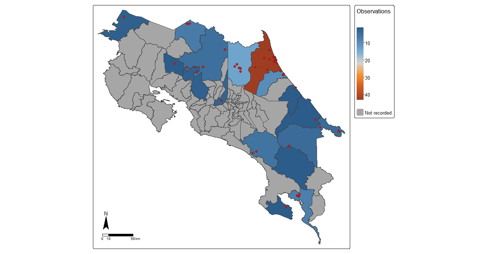
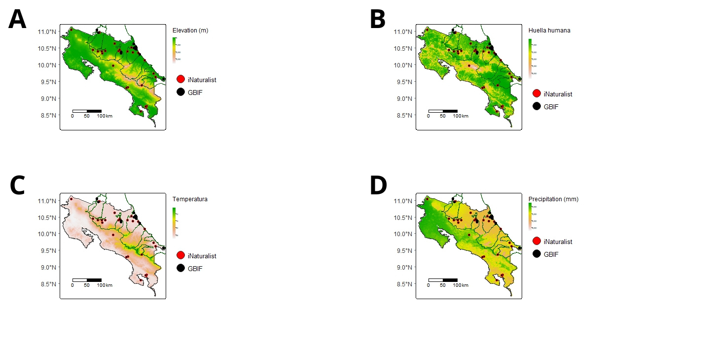

Biology Student — National University of Costa Rica
I'm a biology student with an interest in reptiles, fish, and arachnids. I enjoy learning about these groups while working with them, as well as expanding my knowledge in other fields of biology.
Fish inventory in Hule Lagoon, Bosque Alegre Mixed Wildlife Refuge, Costa Rica.
Bioclimatic factors and the colonization capacity of Parachromis friedrichsthalii in the freshwater ecosystems of Costa Rica.
This image represents the geographical distribution and frequency of Parachromis friedrichsthalii observations by canton in Costa Rica. The color indicates the total number of observations recorded per canton. The red dots correspond to the individual occurrence records.
This image shows the spatial distribution of Parachromis friedrichsthalii records overlaid on thematic maps of key environmental variables in Costa Rica.